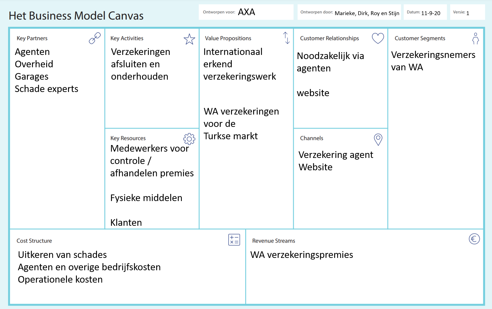

Voor verzekeraars biedt IoT verschillende kansen om hun kosten te reduceren. Op dit moment hebben verzekeraars
voornamelijk de IoT-mogelijkheden gebruikt om de interactie met klanten te verbeteren door middel van ondersteuning
en de versnelling van acceptatie en claimverwerking. In de toekomst biedt IoT zeer aantrekkelijke mogelijkheden voor
verzekeraars om zo hun kosten te besparen. IoT kan het namelijk mogelijk maken dat mensen geen verzekeringsfraude
meer plegen. Verzekeringsfraude een grote kostenpost voor verzekeraars. Door middel van sensoren is het in de
toekomst mogelijk dat fraude herkend wordt.
IoT kan ook veel kosten besparen op autoverzekeringen. Op dit moment wordt autoschade vergoed op basis van indirecte
factoren zoals de kredietwaardigheid van de bestuurder. Met behulp van IoT is het mogelijk dat door middel van
sensoren het rijgedrag van de bestuurder wordt gemeten. Stel dat de bestuurder vaak te snel rijdt, of ander
ongewenst rijgedrag vertoont dan krijgt de verzekeraar hier de cijfers van en kan de verzekeraar de bestuurder hier
op aanspreken. Bij slecht rijgedrag is het zelf mogelijk dat de bestuurder bij een ongeval minder geld terug krijgt
van de verzekering. Natuurlijk kan de verzekeraar zo ook goed gedrag belonen. Nog een voorbeeld van preventie door
middel van IoT is dat bij een ongeluk (bijvoorbeeld met de auto) automatisch de ambulance gebeld kan worden. Op deze
manier bespaar je tijd en dus eventuele extra schadekosten. Door deze IoT mogelijkheden reduceert het niet alleen de
kosten maar levert het ook meer geld op omdat de verzekeraars zich verbreden naar de techniek.
Business Model Canvas AXA
AXA is een internationale verzekeringsgroep en vermogensbeheerder met wereldwijd 126.000 medewerkers en ruim 100
miljoen klanten in meer dan 50 landen. De belangrijkste afzetmarkt is Frankrijk, waar ongeveer een kwart van de
omzet wordt gerealiseerd. In de rest van Europa wordt een derde van de omzet behaald en in Noord-Amerika ongeveer
een zesde.
AXA levert wereldwijd producten en diensten in meer dan 50 landen. Wereldwijd heeft het bedrijf Bijna de gehele
omzet wordt behaald met verzekeringen (vooral levensverzekeringen maar ook ziektekosten- en schadeverzekeringen
(auto-, brand- en familiale verzekering), en een klein deel met bankdiensten zoals beleggingsproducten, zicht- en
spaarrekeningen.
Te gast in de les in Wijchen was Geert Rensen van BeInformed. Hij heeft jarenlang opdrachten gedaan voor AXA en kent het bedrijf dus goed.
Hij kwam met het mini-project om in groepen van vier een Business Model Canvas te maken voor AXA. Ik heb deze opdracht uitgevoerd samen met Marieke, Stijn en Roy.
Hieronder zie je het Business Model Canvas dat wij gemaakt hebben.

Op het Business Model Canvas dat wij gemaakt hebben is terug te zien dat het bedrijf niets met IoT doet. Dit is echter wel belangrijk om eventuele fraude te voorkomen. De opdracht was om een IoT-apparaat in voor in auto's te bedenken waarmee de hoogte van de premies bepaald wordt door het rijgedrag.
Wij hebben hiervoor de Beacon gevonden. Doormiddel van een IoT device in de auto en een app wordt het rijgedrag gemeten. Hierop is de snelheid, het remgedrag, het optrekken enzovoort te zien.
Zodra de bestuurder netjes rijdt wordt hij beloond.
Ons idee hebben wij gepresenteerd voor de klas. Hieronder kun je de presentatie terug zien.
Uiteindelijk vond de docent Mariëlle en Geert onze presenatie het beste. Als beloning kregen wij van Mariëlle een reep chocolade. 😀
Dit gaf mij veel energie om de Minor door te zetten!